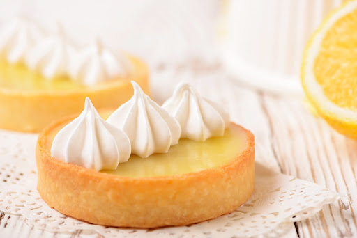

Um delicioso cookie:
Essa receita é prática e deliciosa, leva apenas 7 ingredientes, e é ótima para matar aquela vontade de um docinho depois do almoço!
Receita:
| Ingrediente | Quantidade |
|---|---|
| Manteiga | 1 colher de sopa |
| Açúcar Cristal | 1 colher de sopa |
| Açúcar Mascavo | 1 colher de sopa |
| Gema de ovo | 1 unidade |
| Extrato de baunilha | 1 colher de café |
| Farinha de Trigo | 2 colheres de sopa |
| Chocolate | A gosto |
Modo de Preparo:
- Misture os açúcares: Em uma tigela, junte a manteiga, o açúcar cristal e o açúcar mascavo até formar uma pasta homogênea.
- Adicione os líquidos: Acrescente a gema de ovo e o extrato de baunilha, misturando bem.
- Incorpore a farinha: Adicione a farinha de trigo aos poucos e mexa até que a massa fique firme e uniforme.
- Adicione o chocolate: Misture os pedaços ou gotas de chocolate a gosto na massa.
- Asse o cookie: Modele a massa em formato de cookie e leve ao forno preaquecido a 180°C por cerca de 12 a 15 minutos, ou use o micro-ondas por aproximadamente 1 minuto.

Tortinha individual de limão 🍋
MUITA delícia, receita fácil que faço sempre que dá vontade de uma torta e quero comer sozinha.
Receita:
| Ingrediente | Quantidade |
|---|---|
| Biscoito de maizena | 7 unidades |
| Manteiga | 2 colheres de sopa rasas (acabei pesando a mão kkk) |
| Creme de leite | Metade de uma caixinha (a olho) |
| Leite condensado | 3 colheres de sopa (a olho) |
| Limão | 1 unidade |
Modo de Preparo:
- Prepare a base: Triture bem os biscoitos de maizena e misture com a manteiga.
- Asse a massa: Coloque a massa no micro-ondas por 1 minuto.
- Faça o creme: Misture o creme de leite, o leite condensado e o suco de 1 limão.
- Finalize: Despeje o creme por cima da base de biscoito. Você pode optar por colocar pra gelar ou comer assim mesmo.
